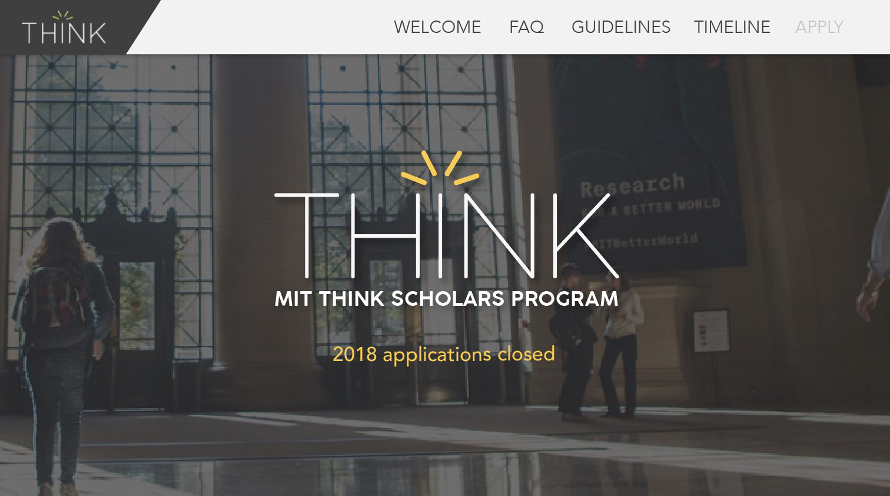
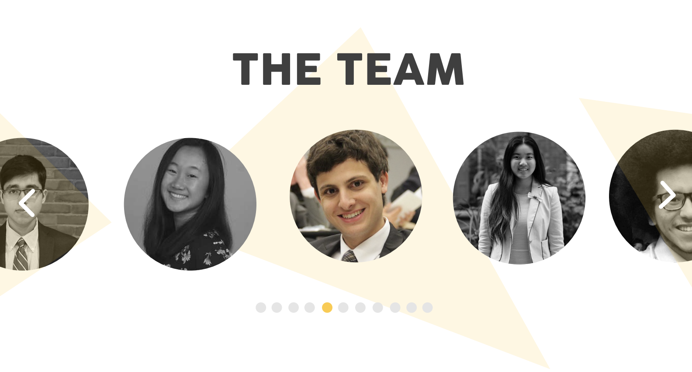

THINK is an MIT undergraduate-run program that awards high school students who want to conduct their own research projects with funding and mentorship. With a new cycle of THINK applications approaching, our team decided to improve the usability and aesthetic of our website, since it is an essential resource that all our applicants visit to apply.
role
User Experience Design, User Interface Design
date
Fall 2018
collaborators
Su Yang (MIT '20), Elizabeth Zhou (MIT '21), Kathryn Jin (MIT '22)
troubleshooting
Before beginning the redesign, a meeting was dedicated for all members of the THINK team — around 20 members — to thoroughly review the website and gather feedback about every section of the website.
Feedback was organized by section, with the most common feedback being emphasized in bold.

style guide
Style guide organized by Kathryn Jin ('22).
One common critique about the old website was that it did not look cohesive due to inconsistent colors and style throughout different sections.
Thus, before distributing the redesign work among our team, we established a clear style guide to maintain a consistent look throughout our separate sections.
section redesigns
home
For the website redesign, our team focused on highlighting the most important information.
We accomplished this for our home page by making the most sought-out information — whether or not applications are open — highly visible and eliminating all unnecessary text around it. We also used a background image that gives a sense of what our program is about to potential applicants.
before

after
winners
One section I led the redesign for was the past THINK winning projects.
The new layout uses a grid-design and images that go with the project titles in order to make the text easier to digest, compared to the old design that feels crowded with text.
before

after

team
I also was in charge of redesigning the section that shows the team that organizes THINK.
My solution to the main problem with our old layout — the bulkiness — was to turn it into a space-efficient carousel that is easily scalable as our team grows.
before

after
The final mockup was created using Adobe Illustrator.